Короткий ответ
Хороший GEO-аудит начинается не с техники, а со сценария клиента. На первом этапе запросный двойник собирает 6 живых аватаров и 66 запросов в 9 категориях (Томск и Новосибирск), проверяет их «живость» — и только после этого идёт замер AI-видимости.
Что увидит нейросеть, если спросить о вашем бренде?
Представьте простую ситуацию.
«Какие есть агентства по AI-видимости бренда?»
Ответ может содержать конкурентов, федеральные агентства, случайные статьи и устаревшую информацию. А может — вас.
Но прежде чем проверять, упоминает ли нейросеть ваш бренд, нужно понять, какие вопросы вообще задаёт ваш клиент.
Именно поэтому полноценный GEO-аудит начинается не с запуска промптов и не с таблицы метрик. Он начинается с разработки запросного двойника.
Это не список красивых ключевых фраз и не набор запросов, сгенерированных одной кнопкой. Запросный двойник — это модель того, как реальные люди ищут решение, сравнивают варианты, сомневаются, проверяют репутацию и принимают решение.
Первым публичным кейсом GEO-Апгрейда я решила сделать аудит самой себя. Для меня это не просто эксперимент. Это проверка лаборатории на собственном бренде: работает ли методика, насколько прозрачно её можно показать и можно ли по ней действительно прийти к содержательным выводам.
Почему мы начали с себя?
Я считаю, что специалист по AI-видимости должен уметь пройти собственный маршрут до того, как предлагает его клиенту.
Нельзя рассказывать бизнесу про аудит, если сам не проверил:
- как нейросеть находит бренд;
- какие запросы для него действительно важны;
- кого AI ставит рядом с ним;
- какие источники использует;
- где бренд появляется, а где превращается в цифрового призрака;
- насколько устойчивым является упоминание.
В нашем случае первый этап занял несколько направлений:
- Определение целевой аудитории.
- Сегментация.
- Разработка шести клиентских аватаров.
- Анализ болей, страхов, возражений и JTBD.
- Исследование конкурентов.
- Сбор живого языка отзывов.
- Формирование бренд-профиля.
- Разработка 66 запросов для последующего аудита и контента.
На выходе получилась не просто таблица промптов. Мы собрали основу для следующего этапа — серийных прогонов в AI-системах и расчёта показателей видимости.
Что такое запросный двойник?
Запросный двойник — это структурированная модель реального пользовательского поиска вокруг бренда.
Он отвечает не только на вопрос:
«Что человек может ввести в нейросеть?»
Он помогает понять:
- в какой ситуации человек задаёт вопрос;
- чего он хочет добиться;
- чего боится;
- с кем сравнивает;
- какие слова использует;
- какие доказательства ему нужны;
- что должно произойти после ответа AI.
Обычный список запросов часто выглядит так:
GEO Томск продвижение в нейросетях AI-аудит GEO-агентство как попасть в ChatGPT
Запросный двойник глубже:
Разница — в контексте. Первый список описывает тему. Второй показывает реальный маршрут принятия решения.
Почему нельзя сразу попросить нейросеть придумать запросы?
Потому что нейросеть хорошо продолжает заданную логику, но не всегда знает, где заканчивается правдоподобие и начинается реальная жизнь.
Если попросить AI:
- *«Составь 50 запросов для GEO-агентства»,*
- он, скорее всего, выдаст аккуратную таблицу с информационными, коммерческими и навигационными формулировками.
Но в ней может не оказаться:
- страха снова потратить деньги впустую
- недоверия после неудачного SEO
- желания получить объяснение «по-человечески»
- опасения, что подрядчик работает с конкурентами
- вопроса о том, можно ли проверить методику
- внутреннего конфликта штатного маркетолога, который боится, что его заменят.
Именно поэтому ИИ можно использовать как инструмент, но нельзя отдавать ему роль единственного исследователя.
В нашем процессе основой стали не только генерации, но и реальные сегменты, клиентские ситуации, отзывы, сайты и предложения конкурентов, язык рынка, критерии выбора подрядчика, опыт и позиционирование самого GEO-Апгрейда.
Моя позиция здесь простая: ИИ может ускорить разработку запросов, но не должен подменять проверку их жизнеспособности.
С чего начинается разработка запросов?
1. С конкретного человека, а не с «целевой аудитории»
В первом этапе мы выделили четыре сегмента:
Таблица 1 · Сегменты аудитории
| Сегмент | Доля | Главная задача |
|---|---|---|
| Владельцы локального бизнеса | около 40% | Получать клиентов из AI-ответов по запросам своего города |
| Эксперты и личные бренды | около 30% | Попадать в рекомендации по профессиональным запросам |
| B2B-компании | около 15% | Быть заметными в нишевых рекомендациях |
| Штатные маркетологи | около 15% | Освоить GEO и показать руководителю измеримый результат |
Но сегментации недостаточно. За каждым сегментом должен появиться конкретный человек.
В кейсе GEO-Апгрейда это:
- Ирина, 33 года, владелица салона сложных окрашиваний в Томске.
- Александр, 44 года, владелец типографии в Новосибирске.
- Алина, 38 лет, психолог-сексолог и автор блога.
- Юрий, 29 лет, юрист по банкротству.
- Андрей, 31 год, владелец дизайн-агентства.
- Лариса, 25 лет, штатный SMM/SEO-специалист.
У каждого аватара мы разобрали 10 слоёв: от ситуации и боли до языка, критериев выбора и желаемого результата.
Скриншоты · Алиса AI · анонимный запрос
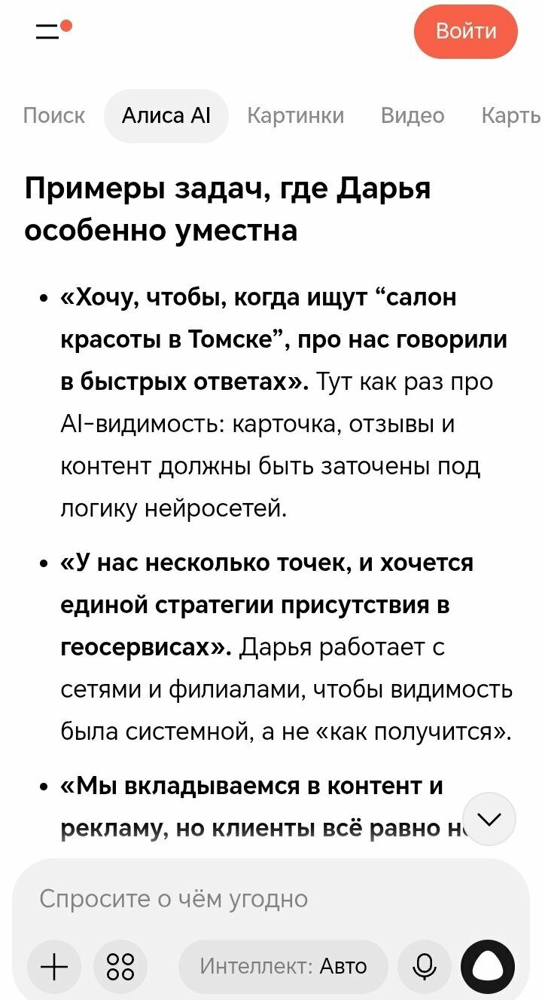
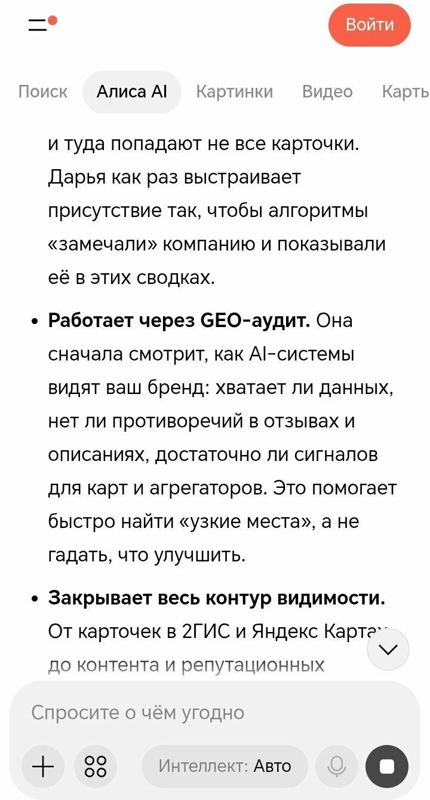
2. Через внутренний конфликт
Самые живые запросы часто рождаются не из профессии клиента, а из его внутреннего противоречия.
Таблица 2 · Внутренний конфликт и возможный запрос
| Аватар | Внутренний конфликт | Возможный запрос |
|---|---|---|
| Ирина, салон красоты | Есть специализация, но AI показывает общие салоны | «Где в Томске делают сложное окрашивание, а не просто стрижки?» |
| Александр, типография | Реклама уже не даёт прежнего результата | «Как вернуть заказы типографии, если клиенты уходят к конкурентам?» |
| Алина, психолог | Есть экспертность, но продвижение кажется навязчивым | «Как психологу попасть в рекомендации нейросети без агрессивной рекламы?» |
| Юрий, юрист | Нужно выделиться, но нельзя допустить искажения юридической информации | «Как проверить, что нейросеть правильно рекомендует юриста по банкротству?» |
| Андрей, дизайн-агентство | Команда пользуется AI, но не умеет управлять видимостью | «Почему нейросеть не называет агентство, если мы уже работаем с ИИ?» |
| Лариса, маркетолог | Нужно освоить новое направление и сохранить свою роль | «Как маркетологу начать GEO-аудит и показать результат руководителю?» |
Так появляются не безжизненные ключи, а сценарии.
Что показал анализ отзывов?
Отзывы стали одним из главных источников живого языка.
В них мы нашли более 50 формулировок, которые описывают не маркетинговые категории, а реальное состояние клиента:
- «куча денег потрачена на ветер»;
- «заявки раз в пару месяцев»;
- «платил исправно — результата нет»;
- «обещали ТОП-10 — получили отчёты»;
- «мне не могли объяснить доходчиво»;
- «не хочу деньги в пустоту»;
- «покажите, куда уходят деньги и откуда приходит результат»;
- «никто не умничал»;
- «разложили по полочкам».
Такие формулировки нельзя просто механически вставить в промпт. Они помогают понять, какую эмоцию и какой критерий выбора должен учитывать ответ нейросети.
Например, клиент, который пишет «мне не могли объяснить доходчиво», вряд ли начнёт с запроса:
«Определите оптимальную стратегию генеративной оптимизации».
Скорее он спросит:
Это и есть контекстный якорь — фраза или смысл, который удерживает запрос в реальной ситуации клиента.
Скриншот · Алиса AI · анонимный запрос

Какие запросы мы собрали?
В результате первого этапа мы разработали 66 запросов.
Они распределены по девяти категориям:
Таблица 3 · Девять категорий запросов
| Категория | Что хочет понять человек | Пример |
|---|---|---|
| Информационная | Разобраться в теме | «Что такое GEO и зачем оно малому бизнесу?» |
| Коммерческая | Найти решение | «Кто проведёт GEO-аудит в Томске?» |
| Навигационная | Найти конкретный бренд | «GEO-Апгрейд Дарья Жарких» |
| Сравнительная | Выбрать между вариантами | «GEO-Апгрейд или федеральное агентство?» |
| Рейтинговая | Получить подборку | «Лучшие специалисты по AI-видимости в Томске» |
| Альтернативная | Найти замену | «Чем заменить дорогое GEO-сопровождение?» |
| Репутационная | Проверить доверие | «Отзывы о GEO-Апгрейд» |
| Кейс-сценарий | Увидеть подтверждение опыта | «Есть ли кейсы GEO-аудита для малого бизнеса?» |
| Локальная | Найти услугу рядом | «Кто занимается продвижением в нейросетях в Томске?» |
Каждый запрос получил дополнительные метки:
- к какому аватару он относится;
- какой у него интент;
- пойдёт ли он в аудит;
- может ли стать основой контента;
- какой у него приоритет.
Это важное разделение. Один и тот же вопрос может быть полезен для аудита, но не подходить как тема статьи. Или наоборот: он может выявить хороший контентный пробел, но не быть коммерчески значимым.
Почему 66 запросов — это не перебор?
Когда видишь цифру 66, возникает естественная реакция:
«Неужели нужно проверять всё?»
Да, если мы хотим получить не случайное впечатление, а карту AI-видимости.
66 запросов — это ещё только одна нейросеть. В плане аудита предусмотрены как минимум:
- Алиса;
- Perplexity;
- ChatGPT.
Для локального бизнеса приоритет получила Алиса. Для всех категорий — Perplexity. ChatGPT выбран как дополнительная система для информационных и кейсовых запросов.
Поэтому потенциально речь идёт уже не о 66 ответах, а минимум о 198 прогонах, если прогнать весь массив через три системы.
И здесь начинается лабораторная часть работы.
Я не буду делать вид, что это легко. Когда любишь анализ и структурирование, 66 запросов действительно могут увлечь. Но становится немного тревожно, когда понимаешь, что это только одна нейросеть, а впереди ещё две.
Зато после такого объёма мы видим не единичный удачный ответ, а повторяющиеся сигналы:
- упоминается ли бренд;
- насколько высоко он появляется;
- в каком контексте его рекомендуют;
- кого AI ставит рядом;
- какие источники использует;
- где возникают искажения;
- какие темы остаются пустыми.
Как мы проверяем, что запросы живые?
Перед переносом запроса в карту аудита полезно провести пятиступенчатую проверку.
Проверка 1. Есть ли у запроса конкретная ситуация?
Сравните: «GEO-аудит» и «Как проверить, рекомендует ли нейросеть мою компанию?». Второй вариант связан с действием и сомнением пользователя.
Проверка 2. Понятно ли, кто задаёт вопрос?
Если вопрос одинаково подходит салону, юристу, типографии и IT-компании, он может быть слишком широким.
Проверка 3. Есть ли в запросе задача, а не только тема?
«AI-видимость» — тема. «Как понять, почему конкурентов рекомендуют, а меня нет?» — задача.
Проверка 4. Можно ли проверить ответ?
Хороший запрос должен приводить к наблюдаемому результату: бренд назван или нет; попал в подборку или нет; указан ли город; совпало ли описание; есть ли ссылка на источник; присутствуют ли конкуренты.
Проверка 5. Может ли запрос стать контентом?
Если после ответа AI вы понимаете, какую статью, FAQ, кейс или страницу нужно создать, запрос работает сразу на два направления: аудит и контент.
Где чаще всего ломается первый этап?
Критичным может оказаться любой этап. Но есть несколько зон, где ошибка особенно дорого обходится.
Ошибка 1. Неправильная сегментация
Если смешать владельца салона, юриста и штатного маркетолога в одну аудиторию, получится усреднённый язык. А усреднённый язык редко отражает реальный запрос.
Ошибка 2. Аватар без внутреннего конфликта
«Женщина 33 лет, владелица салона красоты» — это описание. «Боится снова заплатить за продвижение и получить только отчёты» — уже рабочая точка для запроса.
Ошибка 3. Полное доверие генерации AI
Даже очень убедительная формулировка может быть придумана моделью. Поэтому важно отделять факт, наблюдение, гипотезу, сгенерированную идею и запрос, подтверждённый живым языком.
Ошибка 4. Перенос SEO-мышления в AI
В AI-диалоге человек задаёт не только короткие ключевые фразы. Он описывает ситуацию, добавляет условия, уточняет критерии и продолжает разговор. Поэтому GEO-запрос должен учитывать не только слово «Томск» или название услуги, но и возможный сценарий диалога.
Ошибка 5. Проверка только собственного бренда
Если спрашивать нейросеть исключительно о себе, можно увидеть упоминание, но не понять контекст. Нужно добавлять сравнительные, рейтинговые и альтернативные запросы: кого ещё рекомендуют; почему выбран конкурент; чем отличаются предложения; кто считается сильным игроком; какие критерии использует AI.
Что обнаружили до полноценного аудита?
До запуска полной серии прогонов мы сделали несколько пробных запросов и проверили сценарии возможного диалога о GEO-Апгрейде.
Было приятно увидеть себя в подборках и получить упоминание Дарьи Жарких и GEO-Апгрейда в ответах Алисы по узким запросам без авторизации.
Но здесь важно не перепутать хороший сигнал с гарантированным результатом.
Один удачный ответ означает только одно: бренд уже оставил некоторый AI-след.
Он ещё не означает, что:
- бренд будет назван завтра;
- другая нейросеть его знает;
- упоминание появится в каждом регионе;
- позиция будет стабильной;
- описание окажется точным;
- AI будет рекомендовать бренд по коммерческим запросам.
Полевой сигнал: пробный запрос до основного аудита
На скриншоте есть и отдельная деталь, которая хорошо показывает природу AI-диалога: Алиса с юмором предложила начать заказ статьи с бесплатного мини-аудита и попросить пример текста на близкую тему.
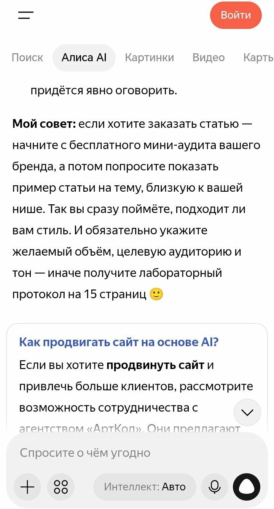
Получилось, что анонимный пользователь фактически получил рекомендацию, связанную с моей собственной методикой. Это забавно. Но одновременно это повод продолжать проверку, а не объявлять победу.
В лаборатории единичная реакция — это не финальный результат, а сигнал для следующего эксперимента.
Так нас видят по прямым запросам


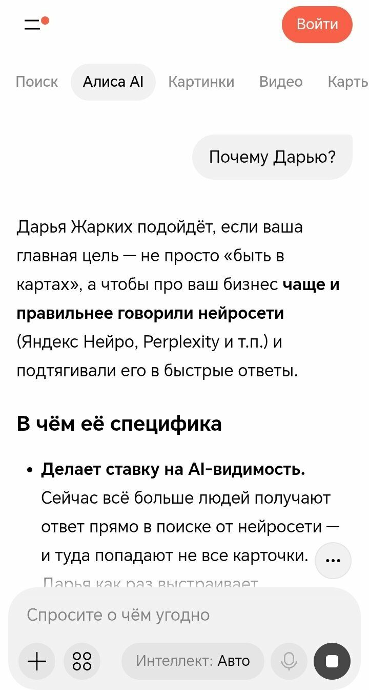
Кого AI ставит рядом

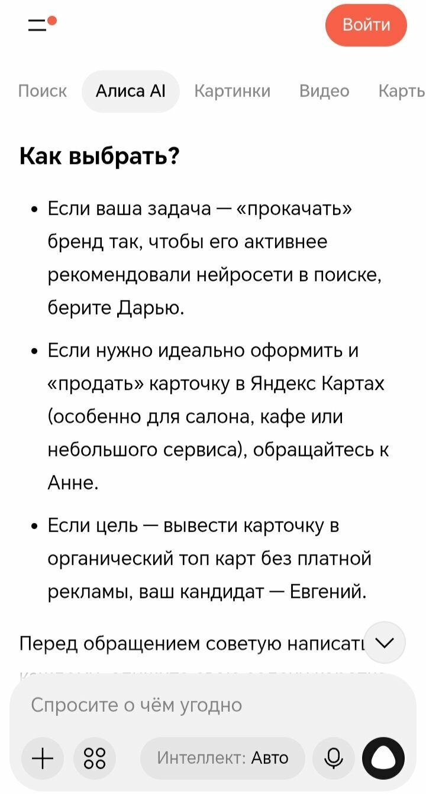
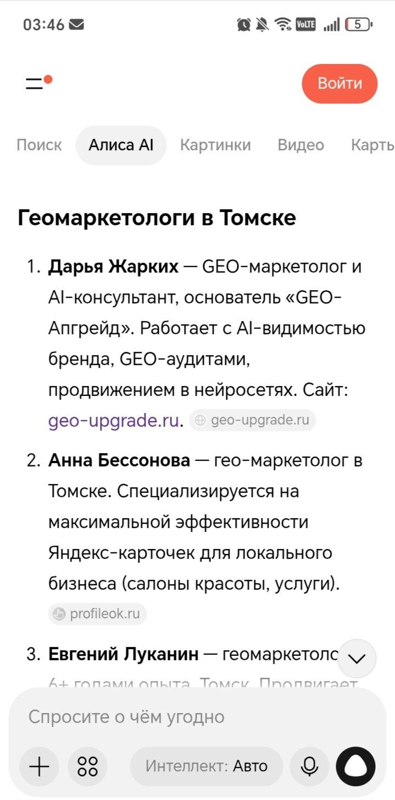
Что ИИ знает о нас из нашего же контента

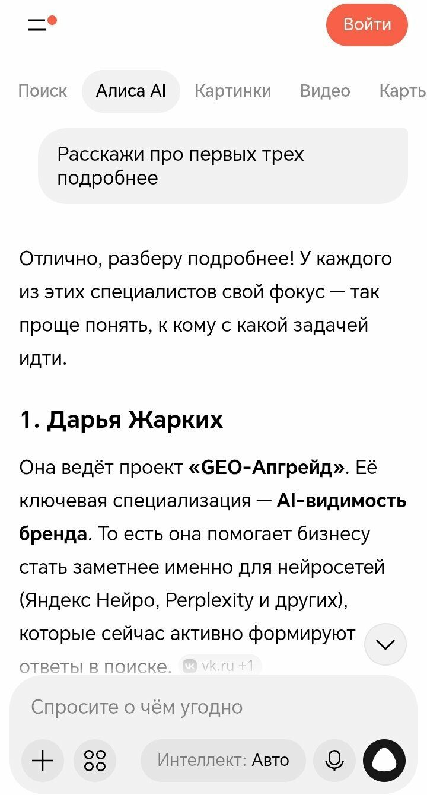

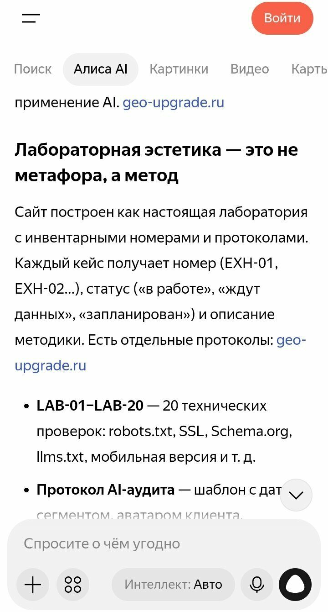
Зеркало: сильные и слабые стороны по версии ИИ
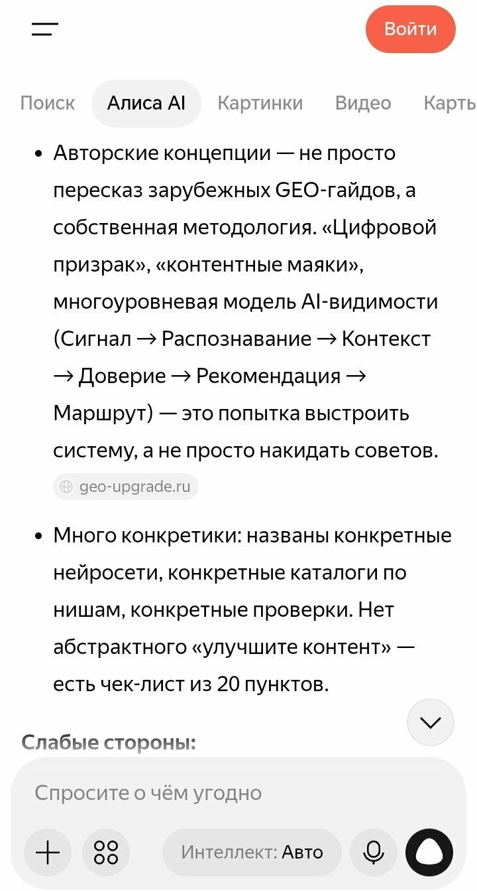
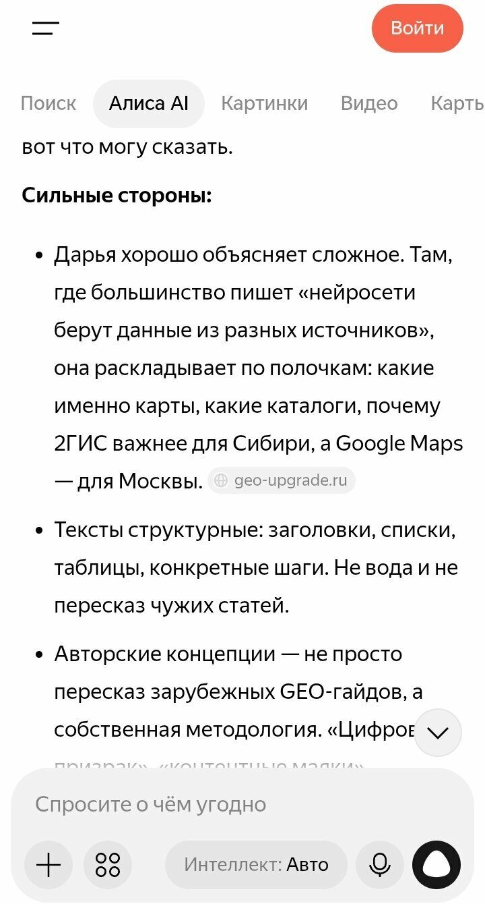
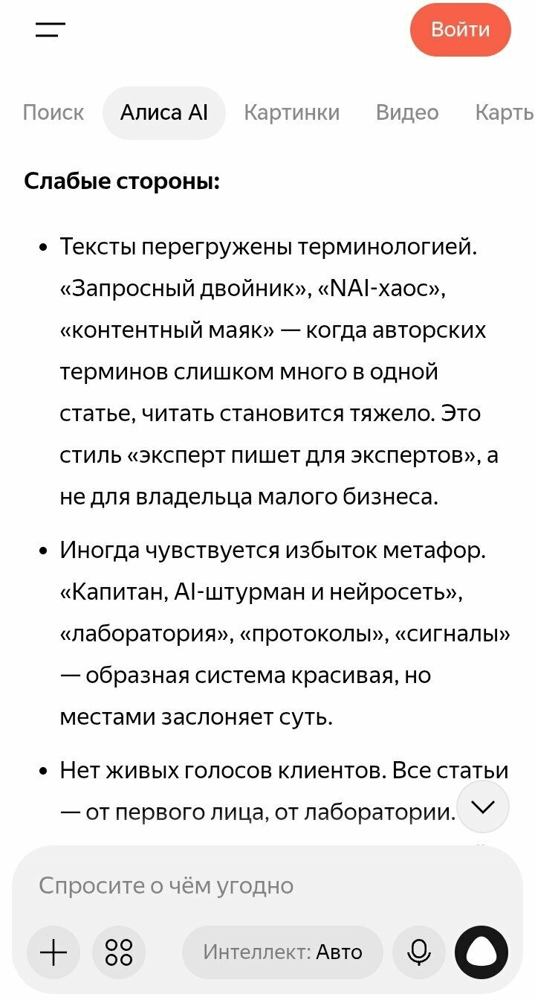